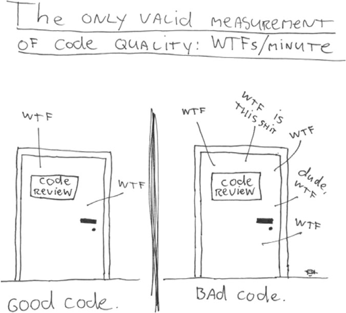

مقدمه

کدامیک از این تصاویر شما را در کدنویسی نشان میدهد؟ کدامیک شما را در تیم یا شرکت نشان میدهد؟ چرا ما در آن اتاق هستیم؟ آیا این فقط یک بررسی ساده کد است یا یک سری مشکلات را مدت کمی بعد از اجرا پیدا خواهیم کرد؟ آیا به خاطر وحشت از خراب شدن کدی که فکر میکردیم درست است آن را دیباگ میکنیم؟ آیا مشتریها برنامه ما را ترک میکنند و مدیران، ما را تنبیه میکنند؟ چطور مطمئن شویم در لحظات سخت، پشت درب درست قرار گرفته ایم؟ پاسخ این است: مهارت.
یادگیری مهارت از دو بخش تشکیل شده است: دانش و تمرین. شما باید اصول، الگوها، تمرینها و شیوههای اکتشافی که یک هنرمند میداند را یاد بگیرید و آن دانش را با انگشتان، چشمها، دل و رودهتان حس کنید و سخت کار کنید و تمرین کنید.
من میتوانم به شما فیزیک راندن یک دوچرخه را یاد بدهم. در واقع، ریاضیات کلاسیک سر راست است. جاذبه، اصطکاک، تکانه زاویهای، مرکز جرم و غیره را میتوان در کمتر از یک صفحه پر از معادلات نشان داد. با توجه به فرمولها میتوانم به شما ثابت کنم که دوچرخه سواری عملی است و میتوانم همه دانشی که برای عملی کردن آن نیاز دارید را یاد بدهم. ولی هنوز در اولین دوچرخه سواریات زمین خواهی خورد. کد نویسی تفاوتی ندارد. ما میتوانیم همه اصول کد تمیز را یادداشت کنیم و بعد به شما اطمینان دهیم که با انجام آنها موفق میشوید(به عبارتی بگذاریم وقتی سوار دوچرخه شدید زمین بخورید)، اما کدام معلم این کار را میکند؟
نه، این راهی نیست که این کتاب میخواهد برود. یادگیری نوشتن کد تمیز، کار سختی است. به بیشتر از دانستن اصول و الگوها نیاز دارد. باید عرق بریزید. باید تمرین کنید و شکستهایتان را ببینید. باید کارهای دیگران و شکست هایشان را ببینید. باید ببینید چطور زمین میخورند و دوباره بلند میشوند. باید ببینید چطور از شکستهایشان عذاب میکشند و چه قیمتی برای تصمیمات بدشان پرداختهاند. آماده باشید که حین خواندن این کتاب سخت تمرین کنید.
این یک کتاب تفننی نیست که بتوانید آنرا در هواپیما بخوانید و قبل از فرود آنرا تمام کنید. این کتاب شما را به کار وادار میکند، پس سخت کار کنید. چه نوع کاری را انجام خواهید داد؟ باید کد بخوانید، مقدار زیادی کد؛ و شما را به چالش میکشد تا در مورد اینکه چه چیز آن کد خوب است و چه بدیهایی دارد فکر کنید. از ما خواسته میشود که بخشها (modules) را از هم جدا و دوباره به هم وصل کنیم. برای این کار زمان و تلاش صرف خواهد شد ولی ما فکر میکنیم که ارزش آنرا دارد.
من این کتاب را به سه بخش تقسیم کردهام. اولین بخش اصول، الگوها و تمرین نوشتن کد تمیز را در بر میگیرد. تعداد کمی کد در این بخش قرار دارد که خواندن آنها چالش برانگیز است. آنها شما را برای خواندن بخش دوم آماده خواهد کرد. اگر پس از خواندن فصل اول کتاب را کنار گذاشتید، موفق باشید!
در بخش دوم کتاب کار سختتر است. این فصل از چند بخش با پیچیدگی افزایشی تشکیل شده است. هر بخش، تمرین تمیز کردن کمی کد است؛ تبدیل کردن کدی که مشکلاتی دارد به کدی که مشکلات کمتری دارد. جزئیات این فصل سخت است. باید دائم بین کتاب و یادداشت برداری جابه جا شوید. باید کدی که با آن کار میکنیم را آنالیز و درک کنید و برای هر تغییری که در کد ایجاد میکنیم استدلال کنید. کمی زمان بگذارید چون این کار باید چند روز زمان ببرد.
بخش سوم کتاب نتیجهگیری نهایی است. این بخش شامل لیستی از اکتشافات و بوهایی (منظور چیزهایی که کد را از حالت تمیز بودن خارج میکند که به بوی بد شهرت دارد) است که هنگام یادگیری جمعآوری شده است. همینطور که پیش میرویم و کدها را تمیز میکنیم، برای هر کاری که انجام میدهیم تحت عنوان بو یا اکتشاف، نکته برداری میکنیم. ما تلاش میکنیم واکنش خودمان را نسبت به کدی که خواندهایم و تغییر دادهایم درک کنیم، و سخت تلاش کردهایم که آنچه احساس کردهایم، آنچه انجام دادهایم و دلیل آن را ضبط کنیم. نتیجه دانشی پایه است که به درک طرز تفکر من هنگام نوشتن، خواندن و تمیز کردن کمک میکند. اگر شما بخشهای فصل دوم را به دقت نخوانید این دانش پایه ارزش محدودی خواهد داشت.
در آن بخشهای آموزشی هر تغییری که ایجاد کردهایم را به دقت و با ارجاع به اکتشافات به طور کامل تشریح کرده ایم. این ارجاعات در کروشه مثل این ظاهر میشوند:[H22]. این به شما اجازه میدهد متنی که در آن از اکتشافات استفاده شده را ببینید. این نه تنها خودش اکتشاف نیست بلکه بسیار ارزشمند است، این رابطه آن اکتشافات و تصمیمات پراکندهای که حین تمیزکردن کد در بخشهای آموزشی گرفتهایم را مشخص میکند. برای کمک بیشتر در رابطه با این روابط، مرجعی در پایان کتاب قرار دادهایم که شماره صفحه هر ارجاع را نمایش میدهد. میتوانید از آن برای دیدن مکانی که هر اکتشاف ظاهر شده، استفاده کنید.
اگر فصل اول و سوم را بخوانید و از فصل دوم صرف نظر کنید، بهتر است یک کتاب تفننی در باره نوشتن نرمافزار خوب بخوانید. اما اگر برای بخشهای آموزشی در فصل دوم وقت بگذارید، هر قدم کوچک را دنبال کنید، هر تصمیم لحظهای، اگر خودت را جای من قرار دهی، و خودت را به همان مسیری که ما میرویم هدایت کنی، درک بیشتری از اصول و الگوها بدست خواهی اورد. آنها دیگر دانش تفریحی نخواهند بود. آنها به دل و روده، انگشتان و قلبتان راه پیدا کردهاند. آنها به بخشی از خودتان تبدیل خواهند شد همان طور که وقتی دوچرخه سواری یاد میگیرید، به بخشی از وجودتان تبدیل میشود.